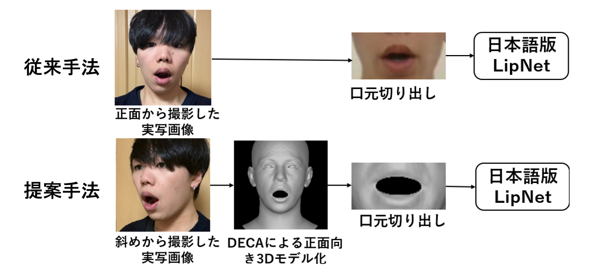
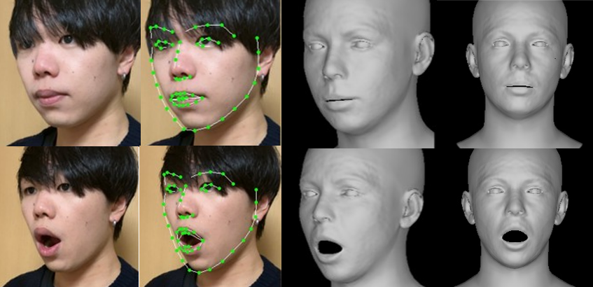

Portfolio
About
大阪大学工学部電子情報工学科学部4年生(2026年2月現在)。大阪大学情報科学研究科 情報システム工学専攻に進学予定。 学部ではコンピュータビジョンおよび深層学習を中心に研究を行い、 特に3次元顔再構築と姿勢正規化を用いた視覚認識のロバスト化に取り組んだ。
Research
卒業研究として、機械読唇のための3D姿勢正規化手法について研究を行った。 発話時の口元の画像を用いて機械学習を行い、テキストに変換する機械読唇という技術において、 従来は正面から撮影された実写の口元の画像をデータセットとして使用していたが、 実運用時の顔の角度変化に対応できないという課題があった。そこで入力として 姿勢を正面に補正した顔の3Dモデルを用いることで、様々な角度からの入力に対しても ロバストな機械読唇を実現する手法を提案した。


Skills
Projects
シフトの提出からシフト表の作成までを自動化するWebアプリケーション。
BestShiftContact
Email: taisei_10.01@icloud.com
Citation
[1] Y. Feng, H. Feng, M.J. Black, and T. Bolkart, “Learning an animatable detailed 3d facemodel from in-the-wild images,”
[2] Y. Assael, B. Shillingford, S. Whiteson and N. de Freitas “LIPNET: END-TO-END SENTENCE-LEVEL LIPREADING”